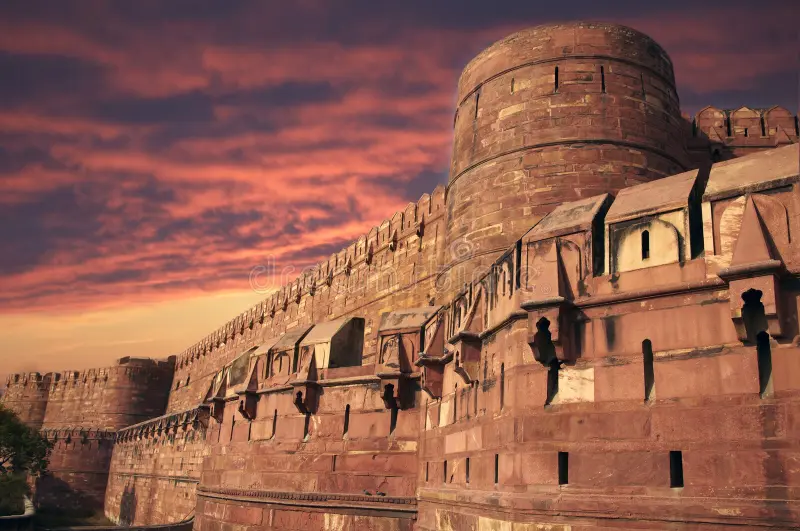
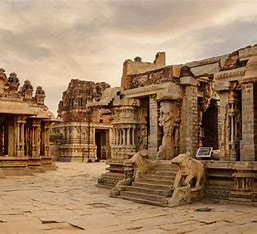

The history of Karnataka is rich and diverse, shaped by various dynasties, cultures, and significant events.

Ancient Period
Evidence of human habitation dates back to the Stone Age, with important sites like the Ashoka-era rock edicts at Sannati.
The region was influenced by the Mauryan Empire in the 3rd century BCE, followed by the rise of local dynasties like the Kadambas.
Medieval Period
The Western Chalukyas, based in Badami, were known for their contributions to art, architecture, and literature. Their temples, such as those at Aihole and Pattadakal, are UNESCO World Heritage Sites.
Known for their patronage of the arts and literature, they built the impressive Kailasa temple at Ellora.
The Hoysalas further enriched the region’s cultural heritage, with notable temples like those at Belur and Halebidu.
Colonial Era
The region was part of the Kingdom of Mysore, especially under rulers like Tipu Sultan, who resisted British colonization. The Anglo-Mysore Wars marked significant conflicts during this time.
After the fall of Tipu Sultan in 1799, Karnataka came under British control, becoming part of the Madras Presidency.
The British introduced railways, education, and modern administration.
Contemporary Karnataka
Today, Karnataka is a hub for information technology, biotechnology, and education, particularly in cities like Bengaluru (Bangalore), which is known as the "Silicon Valley of India."
The state is home to a mix of languages, cultures, and traditions, celebrating festivals like Karaga, Dasara, and Ganesh Chaturthi.
